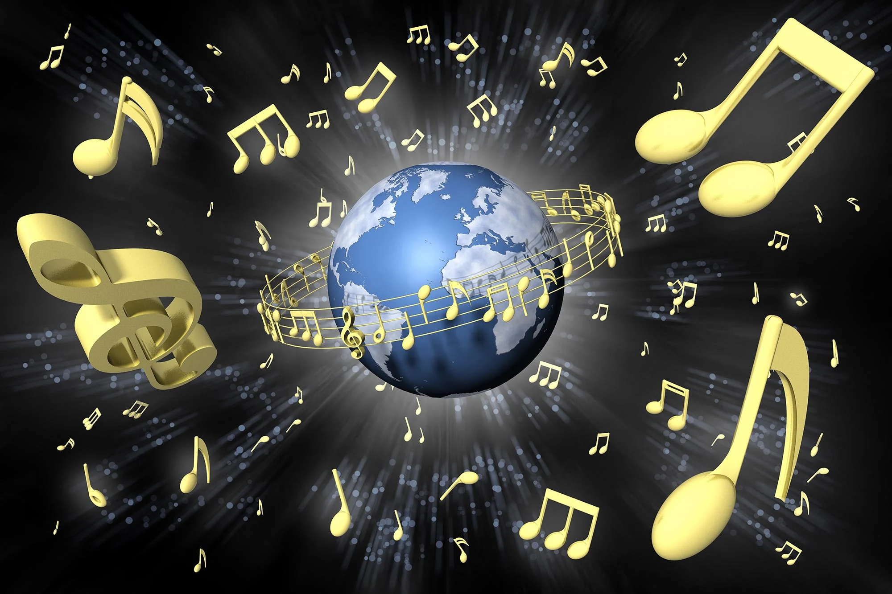

-
Fact 1: Music is Universal
" Music is a universal language, which is understood, appreciated, and adopted by all cultures.
 -
Fact 2: Music and the relationship to Brain
Listening to good music helps enhance the brain through a hormone named Dopamine which is a neurotransmitter associated with pleasure and most importantly, motivation.

-
Fact 3: Music and Memory reactions
In a way, music is easily linked to the functioning of the memory towards a particular song because certain songs trigger past experiences and other types of emotions and so on. This is why certain music is used for therapy creating something called music therapy for individuals with memory loss.

-
Fact 4: The Oldest Used Musical Instrument
The oldest musical instrument ever used by people was a flute carved out from a bear bone dating back to over 40,000 years ago, portraying music as an important part of ancient civilized culture.